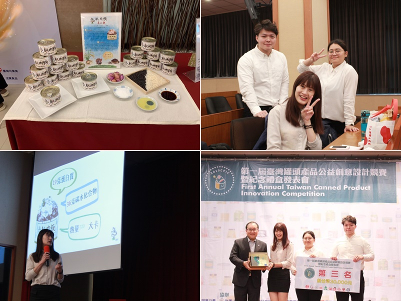

2020年台灣第一屆罐頭產品創意設計競賽榮獲第三名
主辦單位：台灣罐頭食品工業同業公會
參賽作品：肌肉飯
參賽人員： 王郁晴、姚舜文、許庭瑋（ 碩士班）
成績：第三名-義之雞
簡介：隨著運動人口增加、健康訴求提升，有運動習慣、喜愛健身的人，在飲食方面較注重增肌減脂。
本產品希望讓在運動完的人們滿足口腹之慾，又不會對身體有負擔，進而設計出高蛋白、低熱量的雞肉飯罐頭。
此外，也符合上班族外食的需求，不必加熱方便即食，又兼具健康之營業需求。
讓喜愛運動、工作繁忙的人們補充營養的同時，還能享受嘉義雞肉飯的美好滋味！
